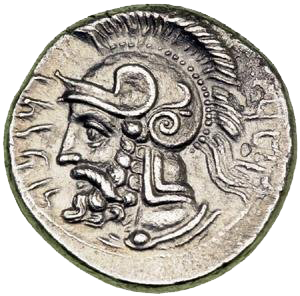
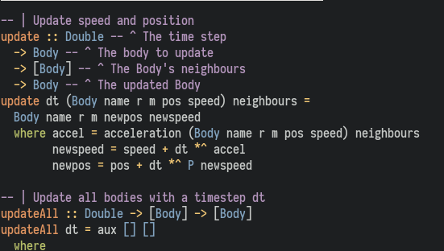
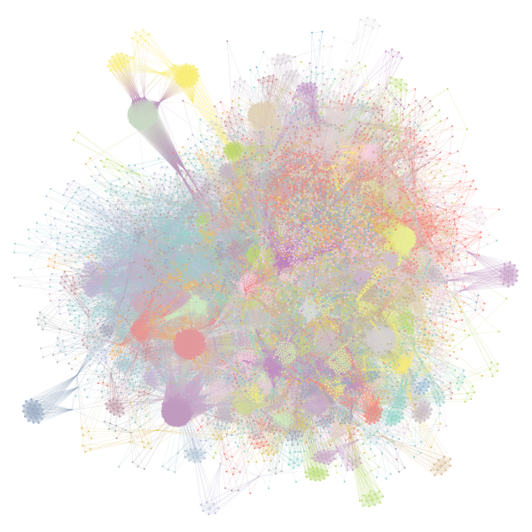
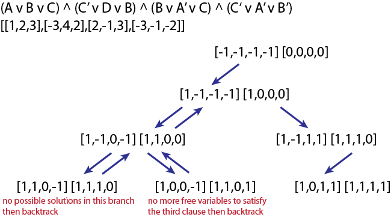
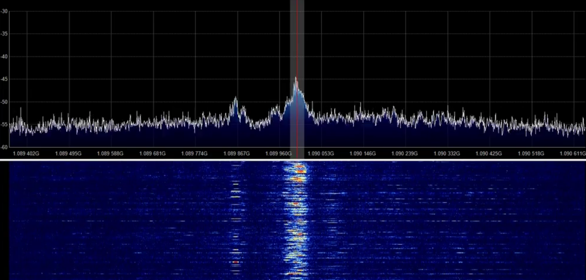

Application of the recent advances in Topological Data Analysis (TDA) and Persistent Homology to periodicity detection in temporal networks. Master's thesis dissertation.
Monte Carlo simulation of the Ising model using Metropolis-Hastings.

Generate and draw L-systems.

Every allied bombing during WWII, mapped over the whole world. The data has been released by the U.S. Department of Defense here.

Simple ARP spoofer, allowing for interception and modification of all communications between two targets. It sends ARP packets to perform a man-in-the-middle attack.

N-body simulator.

Community detection algorithms and applications to a large social network obtained from Prestashop data. Slides (in French).

SAT solver, using the Davis-Putnam-Logemann-Loveland (DPLL) algorithm.

Visualization of plane trajectories over Northeastern France. The data was gathered using a Software Defined Radio to listen to aircrafts.
